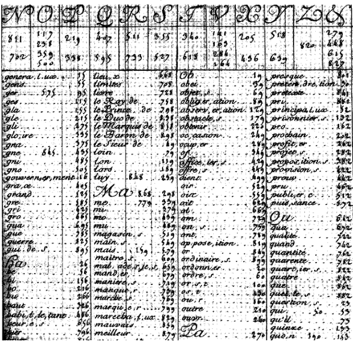
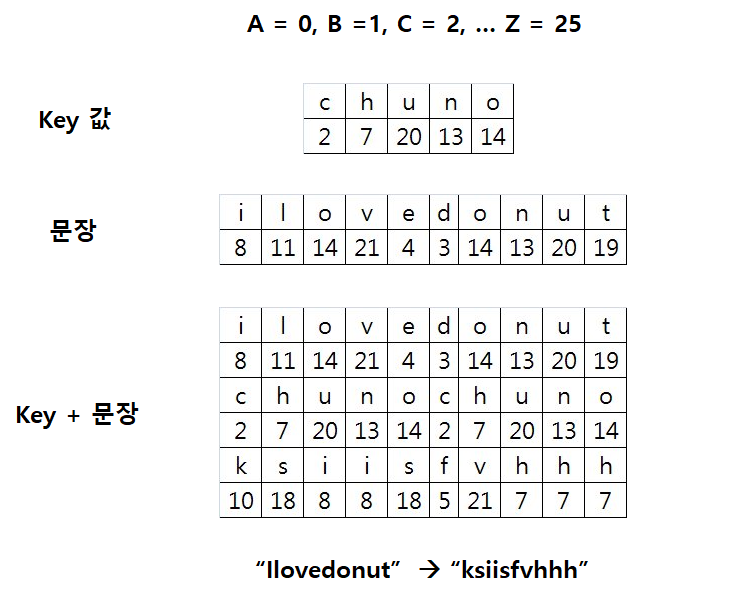
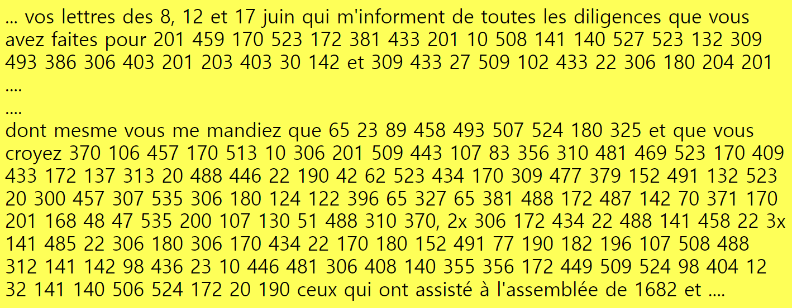
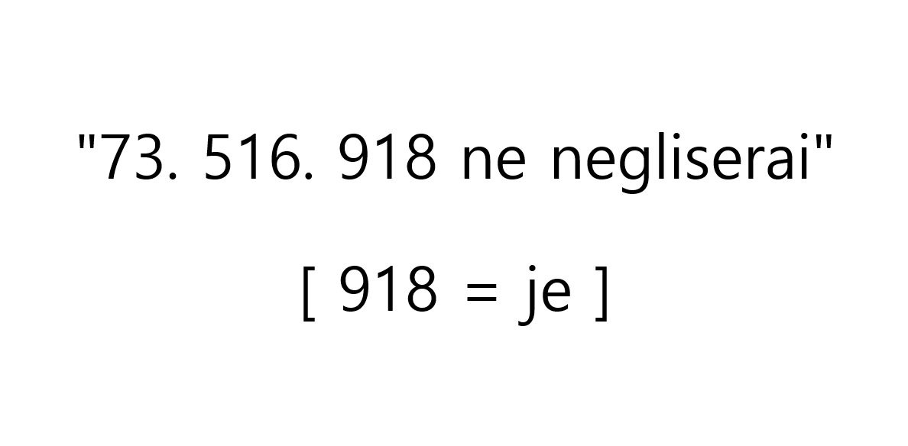
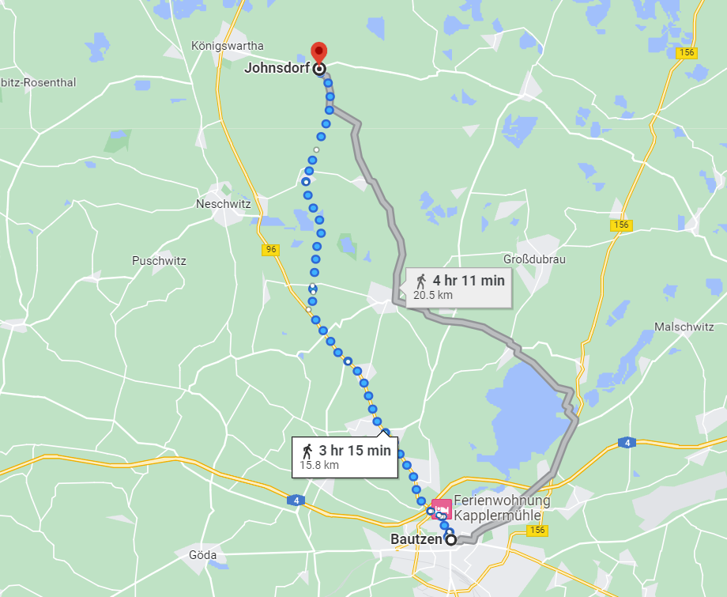
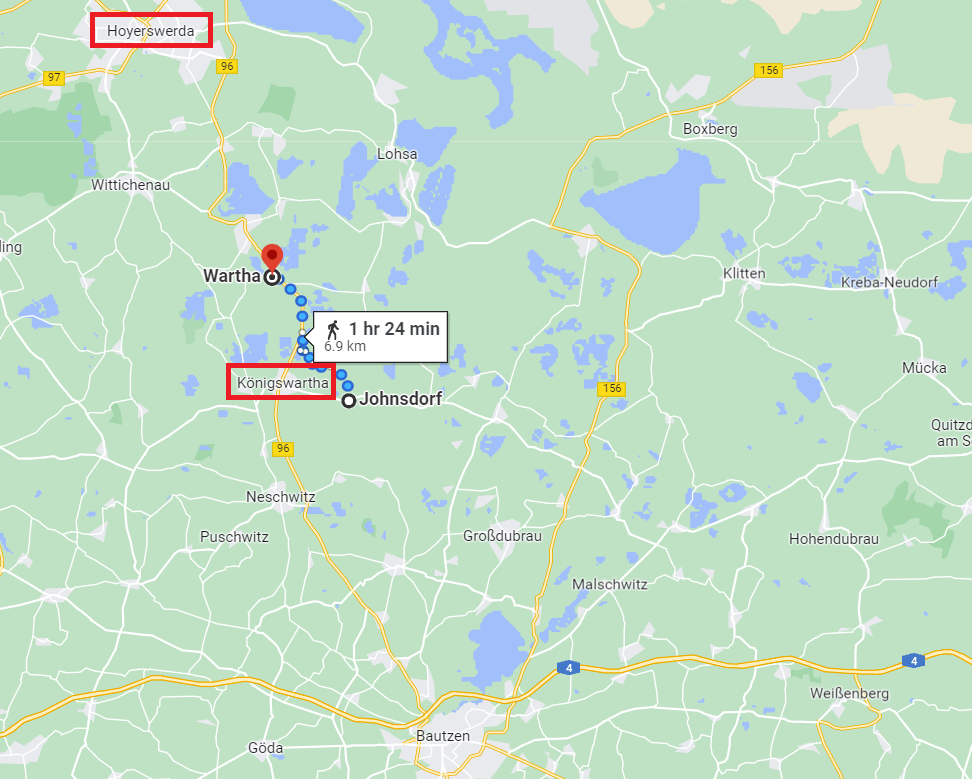
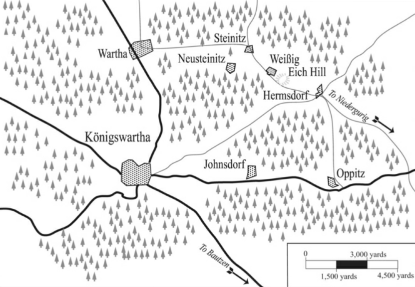

바우첸을 향하여 (15) - 오해는 오해를 낳고
게시: 2023-03-20T06:30:41+09:00
군내 서열에 있어서 훨씬 선임이자 바로 작년 자신의 직속 상관이었던 바클레이의 존재는 비트겐슈타인에게 있어서는 그야말로 눈엣가시였습니다. 과거에 바클레이가 비트겐슈타인을 괴롭혔기 때문이 아니었습니다. 러시아군의 경직된 서열 문화에서 작년의 직속 상관이 지금 자신의 지휘를 받아야 한다는 것 자체가 굉장한 스트레스였기 때문이었습니다. 그래서 비트겐슈타인은 중요 전장이 될 것이라고 추정했던 좌익의 정반대쪽인 우익, 그것도 프로이센군이 지키는 우익보다 더 오른쪽 맨 끝 부분인 크렉비츠(Kreckwitz) 마을 쪽에 바클레이를 배치했었습니다. 그런 상황에서, 연합군의 우익쪽, 즉 북쪽에서 로리스통의 프랑스군 1개 군단이 내려오고 있다는 첩보는 바클레이를 아예 멀리 보내버려 자신의 전장에서 보이지 않게 만들 좋은 구실이 되었습니다. 그 때만 해도 연합군은 코삭 기병대가 탈취해 온, 베르티에가 베르트랑에게 보낸 편지로부터 로리스통의 군단이 내려오고 있다는 것만 알았을 뿐, 바로 그 뒤에 네의 제5 군단이 바싹 따라오고 있다는 것을 전혀 몰랐습니다. 베르티에가 워낙 단편적인 정보만을 편지에 적었기 때문이었습니다. 베르티에의 그런 어정쩡한 일처리는 프랑스군에게도 대혼란을 일으켰지만 덕분에 연합군까지 상황을 오판하게 만들었던 것입니다. 혹시 베르티에가 그렇게 편지가 탈취될 것에 대비하여 일부러 단편적인 정보만을 써보냈던 것일까요? 아닐 것입니다. 그런 것이 걱정되었다면 암호화된 편지를 보냈겠지요. 암호화하기에 급해서 그랬을까요? 정말 중요한 부분만 암호화하는 것도 가능했으니 여전히 그건 변명이 되지 않습니다.

(프랑스는 유럽의 선진국이자 군사강국답게 암호학도 발달했습니다. 원래 이탈리아에서 나온 암호학을 더욱 발전시켜, 비쥬네르(Blaise de Vigenere)가 이미 1586년 프랑스의 앙리 3세의 궁정에 암호 코드를 헌상하기도 했고, 루이 14세 때는 윗사진의 Grand Chiffre(그랑 쉬프르, 글자 그대로 Grand Cipher, 대암호집)을 완성했습니다.)

(이런 암호체계는 단순히 특정 숫자가 특정 알파벳을 나타내는 것이 아니었으므로, 적의 코드집을 손에 넣었다고 해서 모든 암호문을 해독할 수 있는 것도 아니었습니다. 특정 key값을 정해 그 key값으로 암호화된 문장은 그 key값을 코드집에 대입해야만 해독이 가능했습니다. 윗 그림은 나폴레옹이 당시 사용하던 코드를 그대로 보여주는 것은 아니고 비쥬네르 암호집의 기초적인 원리를 보여주는 것입니다. I love donut이라는 문장이 어떻게 chuno라는 key 값을 통해 ksiisfvhhh라는 이상한 문장이 되는지를 보여주고 있습니다.)

(컴퓨터는 커녕 전자계산기도 없는 상황에서 긴 편지를 모조리 암호화하는 것은 당연히 시간이 많이 걸리는 일이었습니다. 따라서 위의 예처럼 핵심적인 부분만 암호화하는 경우가 많았습니다.)

(그런데 암호화하는 일에는 영혼 없이 시간만 때우는 알바생을 쓰면 절대 안되었고, 특히 프랑스어의 경우에는 더욱 그랬습니다. 프랑스어에는 인칭과 시제가 동사에 그대로 반영되었으므로, ne negliserai라는 단어는 1인칭 미래형, 즉 (I) will not neglect를 뜻하는 것입니다. 그러니 저 문장에서 73이나 516은 뭔지 몰라도 918은 1인칭 주어인 je 라는 것이 확실했습니다. 영국군은 스페인에서 게릴라들이 속속 탈취해오는 프랑스군의 암호화 전통문을 분석하여 저런 빈틈을 찾아 조금씩 암호문을 해독했습니다.) 이렇게 잘못된 정보에 근거하여, 비트겐슈타인은 바클레이에게 원래 병력 1만3천에 요크 대공의 프로이센군 제1 군단과 러시아 척탄병 군단까지 합해 총 2만4천의 병력을 주고는 북쪽으로 진격하여 로리스통 군단을 선제 공격하도록 했습니다. 이는 바클레이로서도 그리 나쁜 조치는 아니었습니다. 프로이센 제1 군단과 러시아 척탄병 군단을 다 합해도 1만1천에 불과한 것에서 알 수 있듯이 당시 1개 군단이라는 것이 꼭 몇 명이라는 규칙은 없었으나, 로리스통 군단의 규모가 상당하다고 하더라도 바클레이의 2만4천의 병력이면 충분히 압도할 수 있는 수준이었습니다. 바클레이 본인도 옛부하 비트겐슈타인의 명령에 따르는 것이 편하지는 않았는데, 이렇게 독자적인 활약을 벌이면서도 전공까지 세울 수 있는 기회는 반가운 것이었습니다. 바클레이는 5월 19일 새벽 0시에 북쪽을 향해 행군을 시작했는데, 크게 2갈래로 나누어 북진했습니다. 왼쪽 길로는 바클레이 본인이 지휘하는 러시아군이 갔고, 오른쪽 길로는 요크의 프로이센군이 6~7km의 간격을 유지한 채 북진했습니다.

(욘스도르프는 바우첸에서 약 16km 떨어진 마을로서, 반나절 정도 행군이 필요한 거리입니다.)
오후 1시 경에는 바클레이의 선두부대가 욘스도르프(Johnsdorf)에 도달했습니다. 여기에는 나폴레옹 본진의 좌익을 맡고 있던 베르트랑의 제4 군단에서 파견한 이탈리아군 사단이 하나 있었습니다. 페이리(Luigi Gaspare Peyri) 장군이 지휘하던 이 사단은 대부분 신병으로 구성된 미숙한 부대였는데, 나폴레옹이 곧 북쪽에서 내려올 네와 로리스통의 부대와의 연계점을 찾으라고 베르트랑에게 명령해서 여기에 배치되어 있었습니다. 이들은 자신들이 주전장에서 벗어나 한적한 곳에 배치되었다는 사실에 크게 기뻐하며 사실상 쉬고 있었기 때문에 아무런 경계 조치가 없었고, 덕분에 바클레이가 이끄는 러시아군의 접근을 전혀 눈치채지 못하고 있었습니다. 이들은 이탈리아군을 일찌감치 발견하고 우회하여 2개 사단으로 남북 양쪽에서 협격한 바클레이에게 그야말로 박살이 났습니다. 원래 8천 정도의 규모였던 페이리 사단은 약 7백~8백의 포로를 포함하여 3천에 가까운 병력과 7문의 대포를 잃고 도주했고, 지휘관인 페이리를 포함한 3명의 장군이 포로로 잡혔습니다. 이 전투에서 바클레이의 손실은 1천 정도였는데, 그는 이 대승리를 거둔 것과 1차 목표인 쾨니히스바르타(Königswartha)를 점령한 것에 만족하고 일단 쾨니히스바르타에 머물렀습니다. 이건 결코 태만이 아니었습니다. 그는 자신이 격멸한 이 적군이 로리스통의 군단 중 전위대라고 생각했고, 이 전투의 포성과 총성은 사방 십여 km까지 울려 퍼졌을테니 곧 적의 후위대가 나타날 것으로 예상했습니다. 따라서 본진은 쾨니히스바르타에서 재정비를 하도록 했고 도망치는 이탈리아 병사들에 대한 추격은 그런 임무에 딱 맞는 성격의 부대인 코삭 기병들에게 맡겼던 것입니다.

(욘스도르프에서 북쪽 바르타까지의 거리는 대략 7km입니다. 원래대로라면 대략 2시간 행군 거리이겠으나, 코삭 기병에게 쫓기며 가면 1시간 만에 넉넉하게 주파 가능합니다. 저 북쪽에 네의 출발지점인 호이어스베르다가 보입니다.) 한편, 이렇게 도주하던 페이리 사단의 잔존 병력은 원래대로라면 본대인 베르트랑의 제4 군단이 있는 남쪽으로 도주해야 했으나, 뜻밖에도 바클레이가 남쪽에서 나타나 공격해왔기 때문에 정신없이 길을 따라 도주하다보니 북쪽으로 약 7km 떨어진 바르타(Wartha)로 도망치게 되었습니다. 그리고 더욱 뜻밖에도, 여기서 네의 제3 군단 산하 수암(Joseph Souham) 장군의 사단을 만났습니다. 페이리 사단의 주임무는 북쪽에서 내려올 네의 군단과 연계점을 찾는 것이었는데, 패전 와중에 도망치다보니 어떻게든 결국 임무는 완수한 셈이었습니다. 이들을 추격하던 코삭 기병들도 북쪽에서 강력한 다른 프랑스 사단이 나타났다는 것을 바클레이에게 알렸습니다. 바클레이는 그 부대가 로리스통의 본대라고 판단하고는 동쪽에서 평행으로 북진하던 요크에게 신속하게 쾨니히스바르타로 지원군을 보내올 것을 명령했습니다.

(쾨니히스바르타와 북쪽의 바르타, 그리고 북동쪽의 험스도르프의 위치입니다.) 한편, 요크는 욘스도르프 전투의 포성을 듣고는 '로리스통의 부대는 역시 쾨니히스바르타 쪽에 있었구나'라고 생각하며 자신의 부대에게 선제 공격의 기회가 없어진 것을 다소 아쉬워하며 북진하고 있었습니다. 그는 오후 3시 경에 쾨니히스바르타에서 6~7km 정도 떨어진 북동쪽의 작은 마을 험스도르프(Hermsdorf)에 도달했습니다. 그런데 그 마을 북쪽의 작은 언덕인 아이흐(Eich) 언덕에 올라 북쪽을 정찰하던 요크는 바로 코 앞이라고 할 수 있는 북서쪽 3km 정도의 스타이니츠(Steinitz) 마을에서 프랑스군이 쏟아져 내려오는 것을 보고 기겁을 했습니다. 이쪽에도 저런 대규모 적군이 있을 것이라고는 예상 못했던 그는 황급히 아이흐 언덕에 포대를 방열하고 맹렬한 전투에 들어갔는데, 북쪽에서 내려오는 프랑스군의 규모는 자신의 6~7천 병력으로는 감당이 안 될 정도로 컸습니다. 요크는 곧 이것이 자신들이 찾아나선 로리스통의 제5 군단 본대라는 것을 깨달았습니다. 병력 수에서 심하게 불리했음에도 불구하고 요크의 프로이센군은 거칠게 저항하여, 오후 5시까지도 치열한 전투를 벌이고 있었습니다. 바로 그때, 그렇게 악전고투하던 요크에게 나타난 것은 바클레이의 전령이었습니다. 자신이 있는 쾨니히스바르타에서 결전이 벌어질 것 같으니 빨리 그 쪽으로 지원군을 보내라는 것이었습니다. 이런 상황에서 요크의 답장은 무엇이었을까요? Source : The Life of Napoleon Bonaparte, by William Milligan Sloane Napoleon and the Struggle for Germany, by Leggiere, Michael V
https://en.wikipedia.org/wiki/Great_Cipher http://cryptiana.web.fc2.com/code/napoleon2.htm http://cryptiana.web.fc2.com/code/louisxiv.htm